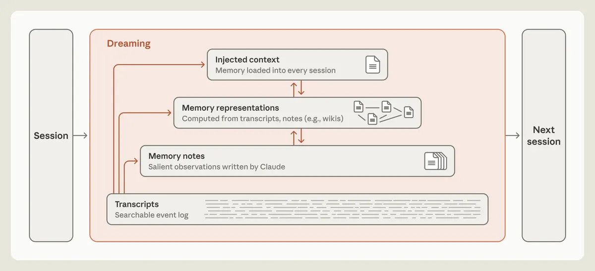
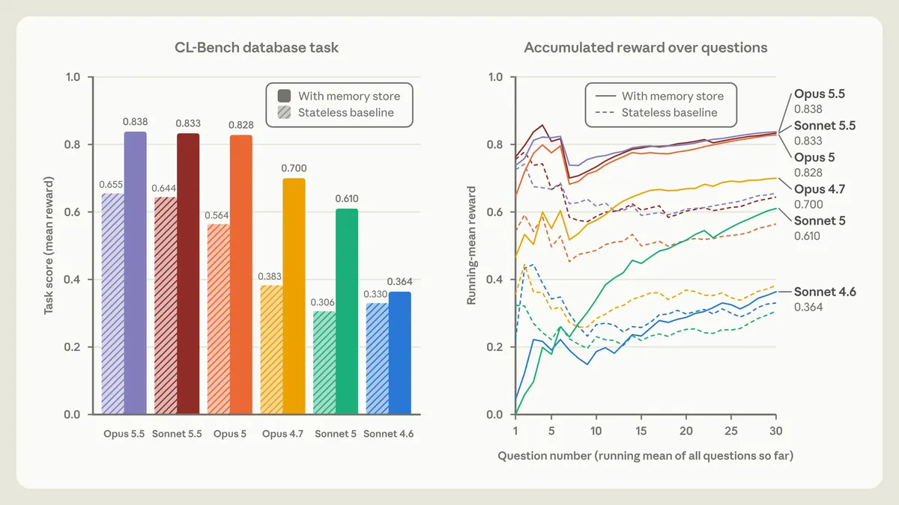

代理記憶：四層分工與離線做夢
導讀原文：Anthropic〈The components of agent memory〉——研究部落格，說明代理記憶的分層與自家評測
代理記憶不是一個更大的檔案，而是四層分工，加一段離線整理時間。
原文先把範圍縮小：記憶只算跨工作階段留下、之後讀得到的知識。權重更新、單次對話內的學習，以及壓縮舊回合的 compaction 都不算。

最底層是逐字稿：可搜尋的事件日誌。往上是 Claude 自己寫的記憶筆記，記下當下判斷為重要的觀察。
第三層是表示層，由逐字稿與筆記算出，例如 wiki；最上層是每次工作階段預先載入的注入上下文，直接吃掉 token。
dreaming 就是橫跨這幾層的離線整理：對照逐字稿糾錯、長出表示層、把該提前載入的筆記往上搬。
（編輯觀點：這張圖真正的主張在最下方——所有上層都必須能追回逐字稿，否則記憶就沒有裁決者。）
記憶要能自己收斂成規則
CL-Bench 1.0 是衡量代理能否用記憶處理長跨度任務的基準。它的資料庫題每題都開新工作階段，唯一延續的是記憶資料夾；答完公布正解，讓模型自己寫下下次怎麼答。

更值得看的是資料夾裡長什麼樣。Sonnet 4.6 散落著一堆沒驗證過的猜測；Opus 4.7 收斂成一份參考文件，開始標記哪些事實查過。
Opus 5 第一次閉環：每條規則都附上「我怎麼知道它成立」、過去的答案，以及途中發現的陷阱警告。
Opus 5.5 與 Sonnet 5.5 同樣閉環，有記憶時與 Opus 5 大致相當——但兩者無記憶的基準本來就略高。
記什麼，比記多少重要
| 模型（約 10,000 步） | 記憶資料夾 | 遊戲進度 |
|---|---|---|
| Sonnet 3.7 | 413 個檔案、225 個資料夾，常逐場戰鬥、逐件道具各開一檔 | 1 枚徽章 |
| Fable 5 | 9 個檔案、2 個資料夾，外加一份 global.md | 4 枚徽章 |
Sonnet 3.7 的毛病不是記太多，是記了會過期的東西：遊戲狀態每回合都在變，它花時間翻舊記錄，而不是玩遊戲。
Fable 5 只寫畫面讀不到的部分——策略、計畫、驗證過的規則；global.md 當儀表板，放當前目標與打道館的預排計畫。
它的規則很具體：連七顆球沒抓到鯉魚王後，它寫下「連三球失敗就改變時機，在選單間多按幾次等待」。
記憶也會錯。Claude 誤記寶可夢中心在東側，走反了還寫「月見山 DONE」，接著掉下單向斜坡三次，最後折返 Pewter，沒到華藍市。
dreaming 對照逐字稿改掉那條方位筆記後，那一輪在第 1,935 個累積動作抵達華藍市（圖表尺度為 3,000 個動作）。逐字稿提供了裁決真偽的基準。
wiki 表示層：有效，但有盈餘條件
用 Stainless（2026 年 5 月併入的軟體公司）約 35 萬份內部文件、約 4.2 億 token 的語料做 25 題，dreaming 從 2 輪擴到 128 輪，評分標準達成率由 13% 升到 48%。
同時給搜尋工具時，總分隨 wiki 成長由 54% 升到 61%（只有搜尋是 53%），每題還省下約 20,000 token。
代價是可能白做：Harvey LAB 中能靠單一文件查到的法務簡報題，wiki 沒有明顯增益；有一次 wiki 長到語料的 1.77 倍，什麼都沒抽象化。
合約條款那題最直接：簡報只涵蓋 57 項事實中的 41 項（72%）。
改成每份合約一頁、由單一代理逐字引述條文後，達成率變成 100%。原文把前一次的缺口歸因於多個代理同時改同一張共享表、互相覆蓋。
給指引，不要給規則
只告知「有記憶資料夾」就足以讓 Opus 4.7 與 Opus 5 用起來；但規定「只記失敗」反而讓兩者失去大部分記憶增益。
強模型要的是判斷空間。較舊的模型相反：提示 Sonnet 4.6 先讀記憶再驗證假設，分數由 0.364 升到 0.641。
Sonnet 5 已能自己做到——不必提示，十次有九次先讀記憶；Sonnet 4.6 不到一半。
代價壓在最上層：Claude Code 的 auto memory 每次只載入 MEMORY.md 前 200 行或 25KB 當索引，因為指令檔越長、遵循度越差。
本站整理。原文以「何時該建立記憶」列為開放問題，未給此對照表；此處僅並列，不代表先後順序。
帶走三件事
記憶要能追回逐字稿。沒有原始記錄，錯的筆記會被一路信任下去。
寫死規則會害到強模型。「只記失敗」讓 Opus 5 的記憶增益大幅縮水。
表示層要有盈餘。wiki 比原始文件還大，就只是更貴的複本。
導讀為本站編輯內容（AI 摘解自原文與館藏重點，非官方文件）；引述數據出自 Anthropic 自家評測（CL-Bench 1.0、內部語料與寶可夢實驗），無第三方驗證，圖解與小標為編輯整理，其中「記憶寫在什麼時候」對照為本站整理。內容經對照原文的獨立事實審查後發布。